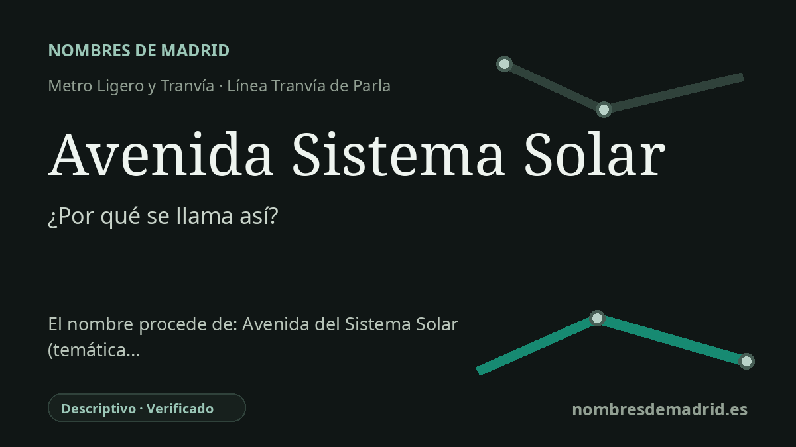

Publicado el · Investigación de Nombres de Madrid · Cómo verificamos cada origen · 8 fuentes consultadas
Respuesta rápida
Avenida Sistema Solar recibe su nombre de la Avenida del Sistema Solar, en Parla Este. La avenida forma parte de un barrio moderno cuyo callejero se organiza con nombres de planetas, estrellas, constelaciones y otros motivos astronómicos.
La historia del nombre
El origen del nombre de la estación es directo y moderno: Avenida Sistema Solar toma su nombre de la Avenida del Sistema Solar, la vía junto a la parada en Parla Este. El Consorcio Regional de Transportes de Madrid sitúa la estación en superficie en Avda. del Sistema Solar, 9, y el esquema de la línea del Tranvía de Parla recoge la parada con la forma abreviada Avenida Sistema Solar.
El nombre de la avenida pertenece al vocabulario astronómico usado en esta zona de Parla Este. En el callejero del entorno aparecen denominaciones como Avenida de los Planetas, Avenida de las Estrellas, Calle Planeta Tierra, Calle Planeta Venus, Calle Estrella Polar y varias calles de constelaciones. En ese contexto, «Sistema Solar» funciona como una idea envolvente: el sistema que contiene los planetas y muchas de las referencias celestes del barrio.
No se trata de un topónimo medieval ni de un antiguo nombre rural conservado. Parla Este es una expansión urbana planificada en el lado oriental de Parla, desarrollada mediante el Consorcio Urbanístico Parla Este. Un anuncio del BOE de 2000 ya menciona el proyecto de urbanización del PAU 4, «Residencial Este», y la documentación demográfica municipal describe Parla Este como un barrio de nueva construcción cuyo desarrollo comenzó a inicios del siglo XXI.
El tranvía reforzó esa geografía planificada. La línea de metro ligero de Parla conecta el casco urbano con la nueva expansión oriental, y las paradas de Parla Este suelen reflejar el callejero cercano: Tierra, Venus, Estrella Polar y Avenida Sistema Solar son ejemplos de cómo el mapa del transporte adoptó el vocabulario astronómico del barrio.
Por tanto, el origen está asegurado en el nivel de la estación: la parada se llama por la avenida. Lo que queda menos documentado de forma directa es el acuerdo municipal exacto que asignó los nombres astronómicos a las calles y la fecha precisa en que se denominó la Avenida del Sistema Solar. Hasta consultar ese expediente de denominación viaria, la formulación más prudente es decir que la estación recibe el nombre de la avenida dentro del esquema astronómico moderno de Parla Este.
{kind=link}